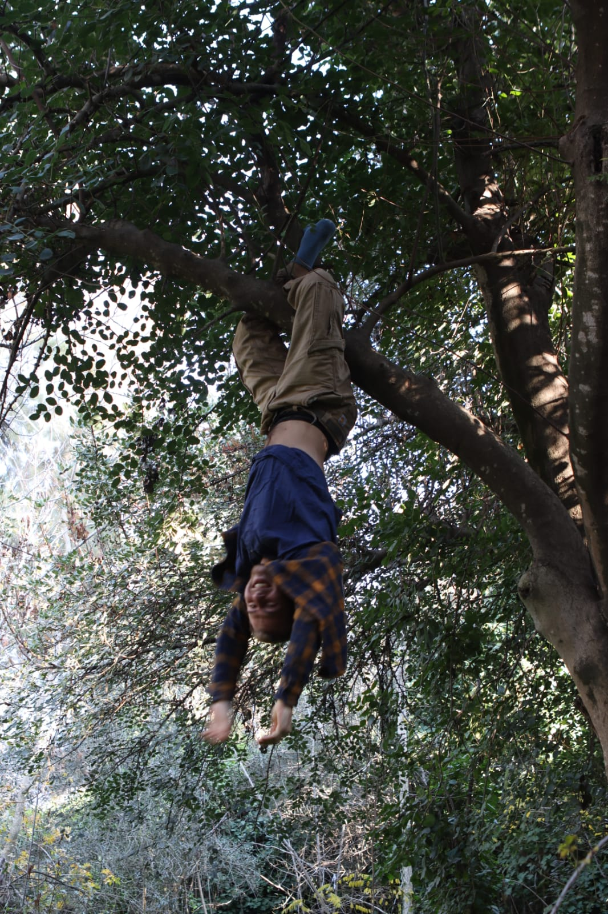

🌿
🌿

Recognized for outstanding commitment to the art of hanging upside down from trees for extended periods while maintaining a professional demeanor.
This prestigious award celebrates individuals who demonstrate exceptional dedication to the practice of inverted arboreal suspension, showcasing both physical prowess and dignified composure in challenging gravitational circumstances.
About the Award
The Golden Branch Award is the highest honor bestowed by the International Tree Hanging Association. Recipients have demonstrated extraordinary skill in the following areas:
- Duration of inverted suspension
- Graceful technique and form
- Professional appearance while inverted
- Contribution to the advancement of tree hanging practices